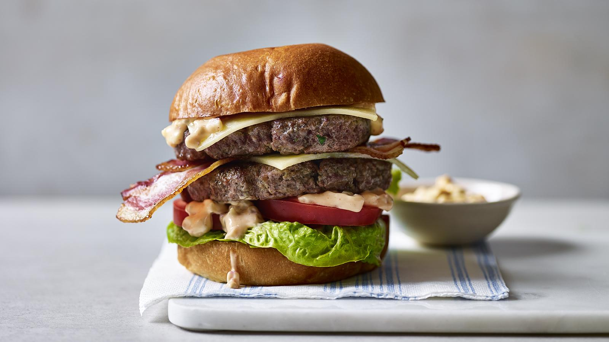

Homemade burger

This ultimate burger recipe is simple and deluxe – you'll never make a homemade burger the same way again! Well-seasoned, high quality beef, fresh, crisp toppings and a cracking special sauce will outshine any fast food version.
Ingredients
- 225g-250g beef mince, 15% fat
- 1 level tsp salt
- ground black pepper
- 1 brioche burger bun (cut side toasted)
For the burger sauce
- 1 tbsp tomato ketchup
- 2 tbsp mayonnaise
- 1 gherkin, finely chopped
- 1/2 small red onion, finely chopped
- 2 tbsp freshly chopped dill
Steps
- Tip the mince into a large bowl and break up with a fork. Add the salt and massage with your hands until the mixture is soft and the salt is well incorporated. Cover and leave to stand at room temperature for 25 minutes.
- For the sauce, mix all the ingredients together. Set aside
- Divide the mince mixture into two equal portions and pat into two thin burgers approximately 12cm/4½in diameter. Use a small bowl or saucer as a guide if you want them to be really neat.
- Heat a non-stick frying pan over a high heat. Add the burgers and cook for a minute on each side or until browned and cooked through.
- Serve the burgers and sauce in the toasted bun with the toppings of your choice.